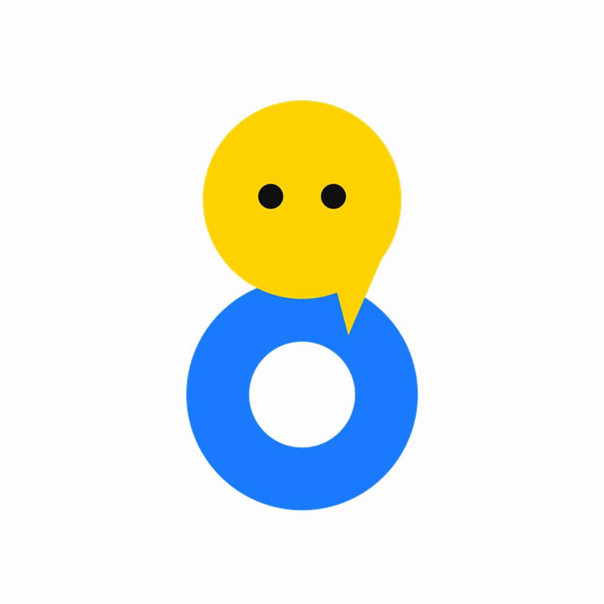

BAH LI TANG Manager is a private tool run by the owner of the short-video channel 8粒蛋 BAH LI TANG (TikTok @8lihtang). It helps the owner collect performance figures for the channel's own videos on YouTube, Instagram, Facebook and TikTok, so the owner can see which videos work and plan the next ones.
The tool runs on the owner's own computer. It is not a public service: it has no other users, no sign-up and no public API.
Contact: bahlitang.media@gmail.com